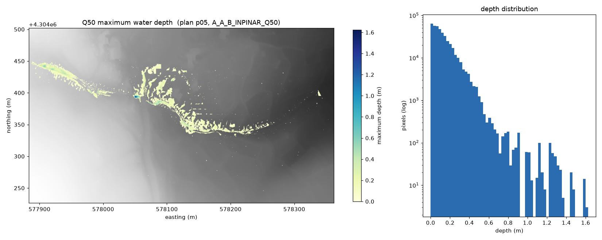
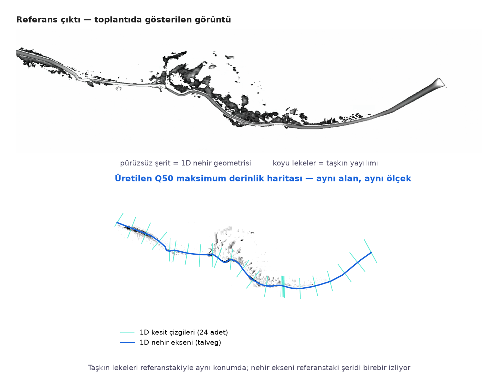

İçindekiler
1Yönetici özeti
Uygulama, verilen HEC-RAS projesindeki yedi plan arasından Q50 senaryosunu insan müdahalesi olmadan belirliyor, projenin hesaplanmış sonuçlarından maksimum su derinliği ızgarasını kuruyor ve coğrafi referanslı bir GeoTIFF olarak yazıyor. Orijinal veriye hiçbir koşulda yazılmıyor ve bu her çalıştırmada kriptografik olarak kanıtlanıyor.
Üretilen harita, toplantıda gösterilen referans çıktıyla örtüşmektedir (bölüm 11).
Çalışmanın en çok emek isteyen kısmı kod değil, veriyi anlamaktı. Teslim edilen proje olduğu gibi yeniden hesaplanamıyor; sistematik bir denetim sekiz ayrı tutarsızlık ortaya çıkardı. Bunların her biri belgelendi, çözülebilenler çalışma kopyasında onarıldı, çözülemeyen tek konu ise altı ayrı deneme ile daraltılıp raporlandı. Bu rapor, alınan teknik kararları ve neden alındıklarını anlatır.
2İsterlerin karşılığı
| Belgedeki ister | Durum | Karşılığı |
|---|---|---|
| Proje klasörünü ve HEC-RAS kurulum dizinini alabilmeli | Karşılandı | --project ve --ras-dir; sabit yol yok |
| Q50 otomatik belirlenmeli, kullanıcıya seçtirilmemeli | Karşılandı | Proje dosyasındaki plan listesi + sınır kontrollü kalıp |
| Harita HEC-RAS proje sonuçları kullanılarak üretilmeli | Karşılandı | Sonuç HDF5'inden hücre bazlı maksimum su kotu |
OUTPUT klasörüne q50_depth.tif adıyla yazılmalı | Karşılandı | Varsayılan çıktı yolu |
| Anlaşılır durum bilgisi, kontrolsüz kapanma olmamalı | Karşılandı | Adım adım rapor, hata sınıfı başına çıkış kodu |
| Orijinal proje dosyaları değiştirilmemeli | Karşılandı | Çalışma kopyası + SHA-256 bütünlük kanıtı |
| Hazır sonuç rasterı kopyalanmamalı | Karşılandı | Harita her koşuda sonuçlardan hesaplanıyor |
| Yollar sabit bilgisayara gömülmemeli | Karşılandı | Tüm yollar argüman |
| Talimatlar izlenerek yeniden üretilebilmeli | Karşılandı | README + tek komut |
| Uygulama HEC-RAS hesabını tetiklemeli | Kısmi | Kod mevcut ve çalışıyor; HEC-RAS motoru teslim edilen veriyle çöküyor — bölüm 8 |
3Q50 senaryosunun belirlenmesi
Projede yedi plan var. Doğru olanı bulmak ilk bakışta bir metin araması gibi görünüyor; uygulamada iki ayrı tuzak barındırıyor.
| Plan | Plan Title | Short Identifier | Geometri / Akış |
|---|---|---|---|
| p01 | A_A_B_INPNAR_STEADY | A_A_B_INPINAR_STEADY | g01 / f01 |
| p02 | A_A_B_INPINAR_STEADY | A_A_B_INPINAR | g01 / f01 |
| p03 | A_A_B_INPINAR_UNSTEADY_2D | INPINAR_Q500_UNSTEADY | g03 / u01 |
| p04 | A_A_B_INPINAR_Q500 | A_A_B_INPINAR_Q500 | g03 / u04 |
| p05 | A_A_B_INPINAR_Q50 | Q50 | g03 / u05 |
| p06 | A_A_B_INPINAR_Q100 | Q100 | g03 / u06 |
| p07 | A_A_B_INPINAR_Q1000 | Q1000 | g03 / u08 |
Tuzak 1 — alt dize eşleşmesi
En doğal çözüm olan alt dize araması sessizce yanlış cevap verir, çünkü "Q50"
dizisi "Q500" metninin içinde geçer:
# Naif yaklaşım üç planla eşleşir: p03, p04 ve p05
>>> "Q50" in "INPINAR_Q500_UNSTEADY"
True ← yanlış eşleşmeÇözüm, Q50'nin iki yanında rakam olmamasını şart koşan sınır kontrollü bir kalıptır:
(?<![0-9])[Qq]0*50(?![0-9])(?<![0-9]) öncesinde, (?![0-9]) sonrasında rakam istemez; 0*
ise Q050 gibi sıfır dolgulu yazımı kabul eder. Kalıp yedi planın tamamında ve ayrıca
yapay örneklerde sınandı: Q50 ve Q050 eşleşiyor; Q500,
Q5000, Q100, Q1000 eşleşmiyor.
Tuzak 2 — proje listesinde olmayan plan dosyası
Aynı klasörde Backup.p01 adlı bir dosya duruyor:
Plan Title=A_A_B_INPINAR_Q50
Short Identifier=Q50Bu tam eşleşme. Klasörü *.p?? deseniyle tarayan bir seçici iki sonuç bulur
ve hangisinin doğru olduğunu bilemez — sınır kontrollü kalıp da bunu elemez, çünkü metin gerçekten
birebir aynı.
Alınan karar: plan listesi klasör taramasıyla değil,
A_A_B_INPINAR.prj dosyasındaki Plan File= satırlarından okunur.
Proje dosyası yalnızca p01–p07'yi bildirir; Backup.p01 orada yer almadığı için
hiç değerlendirmeye girmez. Tuzak bir istisna ile değil, doğru kaynağı seçerek çözülür.
Proje dosyasında ayrıca Current Plan=p05 yazıyor. Bu bilgi seçim ölçütü olarak
kullanılmadı — belge otomatik belirleme istiyor ve bu alan projeyi en son kimin nasıl
kapattığına bağlı. Yalnızca çalışma kaydına "seçimle uyuşuyor" notu olarak düşülür.
Sıfır eşleşme ve çoklu eşleşme ayrı ayrı hata verir; hiçbir durumda "ilkini al" davranışı
yoktur. Nitekim bu projede --scenario Q500 iki planla eşleştiği için bilinçli olarak
reddedilir.
4HEC-RAS ile etkileşim
HEC-RAS bir Windows programıdır; bu, boru hattındaki tek platforma bağlı adımdır ve tek bir modüle hapsedilmiştir. Sürüş, belgenin de önerdiği ras-commander kütüphanesi üzerinden yapılır — belge dışı komut satırı anahtarı uydurulmamıştır.
| Yol | Çağrı | Ne yapar |
|---|---|---|
| Varsayılan | RasCmdr.compute_plan() | HEC-RAS komut satırı çalıştırıcısı |
| Alternatif | RasControl.run_plan() | RAS66.HECRASController COM otomasyonu — arayüzün kullandığı arabirim |
Kütüphanenin fonksiyon adları ve parametreleri hatırdan veya dokümandan değil, kurulu paket
üzerinde inspect.signature ile okunarak yazıldı. Bu, çalışmayan kod riskini
baştan ortadan kaldırdı.
Kaynak bütünlüğü
HEC-RAS bir planı çalıştırdığında proje klasörüne yazar. Bu yüzden uygulama proje ağacını önce bir çalışma dizinine kopyalar ve hesabı orada yapar. Kısıtın gerçekten sağlandığı ayrıca kanıtlanır: çalışma başında ve sonunda kaynak klasörün parmak izi çıkarılıp karşılaştırılır.
integrity source unchanged (176 files, full check)--integrity full her dosyanın SHA-256 özetini alır. Bu, "değiştirmedim" demenin
değil, gösterebilmenin yoludur.
5Derinlik haritasının üretimi
Kritik bulgu: HEC-RAS hazır bir maksimum derinlik veri seti üretmiyor. Sonuç
dosyasındaki özet çıktı Maximum Water Surface, yani hücre başına maksimum su
kotu (2 × 5.667: kot ve zaman). Derinlik türetilmek zorunda.
derinlik(piksel) = pikseli kaplayan hücrenin maksimum su kotu
− o pikseldeki arazi kotuIzgara hücre çözünürlüğünde değil arazi çözünürlüğünde kurulur (bu veri setinde 0,1 m), çünkü bir HEC-RAS 2D hücresi düz değildir; içinde alt-ızgara topografya taşır. Pencere, arazi rasterinin kendi piksel ızgarasına hizalanır; böylece arazi yeniden örneklenmeden okunur.
Üç ayrıntı bu haritayı doğru yapıyor
1 · Hücre çokgenleri. Cells FacePoint Indexes bir hücrenin köşelerini verir
ama halka sırasında vermez. Köşeler hücre merkezine göre açıya sıralanır; HEC-RAS 2D hücreleri
dışbükey olduğu için bu sıralama tam olarak çokgen sınırıdır.
2 · Arazi kot değişiklikleri. Geometri merge.Clone arazisi üzerine kurulu.
RASMapper arazi katmanı bir çifttir: .vrt kot ızgarasını, .hdf ise
üzerine çizilen değişiklikleri tutar — burada 69 bina için +20 m. Bu değişiklikler
.vrt'ye gömülü değildir, RASMapper onları anlık uygular. Yalnızca .vrt
okunursa harita binaların üstüne metrelerce su boyar:
| Bina kot değişikliği | Ortalama derinlik | Değerlendirme |
|---|---|---|
| Uygulanmadan | 3,37 m | Fiziksel olarak imkânsız |
| Uygulandıktan sonra | 0,13 m | Hücre bazlı ortalama 0,117 m ile tutarlı |
3 · Islanmamış hücreler. Hiç ıslanmayan bir hücre için HEC-RAS maksimum su kotunu
hücrenin kendi taban kotu olarak raporlar — bu su değildir. Tabanı bir bina üzerinde oturan kuru
hücreler, binanın kaplamadığı şeritte 20 m derinlik üretir. Bu yüzden yalnızca
maksimum su kotu > hücre taban kotu olan hücreler boyanır. Kural olmadan artık
36–54 piksel 2 m'nin üzerinde, en fazlası 19,96 m çıkıyordu; kuralla birlikte en derin piksel
1,625 m.
Koordinat sistemi
CRS, sonuç dosyasının kök Projection özniteliğindeki WKT'den okunur.
EPSG:32636 elle yazılmamıştır — ve yazılmamalıydı: bu izdüşüm merkez meridyen 30°E
ile Transverse Mercator, ancak ölçek faktörü 1,0; oysa UTM 36N 0,9996 kullanır. Model
UTM 36N değildir ve to_epsg() haklı olarak boş döner. Doğru kaynak, projenin
kendi WKT'sidir.
Denenip vazgeçilen bir yöntem
Taşkın kenarının tırtıklı görünümünü yumuşatmak için ıslak hücre merkezleri arasında doğrusal enterpolasyonla eğimli bir su yüzeyi denendi. Sonuç fiziksel olarak imkânsızdı: maksimum derinlik 20,4 m, 99. yüzdelik 11,4 m (doğrusu 1,6 m). Sebep, ıslak hücrelerin kopuk kümeler halinde olması ve üçgenlemenin vadinin bir yamacından diğerine uzanmasıydı.
Yanlış çalışan bir seçeneği "opsiyonel" diye teslime koymak yerine kaldırıldı ve gerekçesi belgelendi. Teslim edilen her satır savunulabilir olmalıdır.
6Çıktının doğru senaryoya ait olduğunun doğrulanması
"p05'i seçtim" bir doğrulama değildir. Zincirin her halkası kontrol edilir ve sonuçlar çalışma kaydına basılır:
Scenario verification:
[ok] results belong to the selected plan: results say plan file 'A_A_B_INPINAR.p05'
[ok] plan title agrees: results 'A_A_B_INPINAR_Q50' vs plan file 'A_A_B_INPINAR_Q50'
[ok] short identifier agrees: results 'Q50' vs plan file 'Q50'
[ok] results still carry the Q50 label
[ok] geometry agrees: results 'A_A_B_INPINAR.g03' vs plan 'g03'
[ok] flow file agrees: results 'A_A_B_INPINAR.u05' vs plan 'u05'
[ok] the grid holds water: 413858 wet pixels, maximum depth 1.625 m
[ok] depth stays inside the modelled water surfaceBir kontrol düşerse uygulama çıktı yazmadan durur. Ayrıca künye GeoTIFF'in içine gömülür: senaryo, plan numarası, plan başlığı, kısa kimlik, geometri, akış dosyası, simülasyon penceresi, HEC-RAS sürümü, kaynak dosya adı, arazi adı ve HEC-RAS'ın gerçekten çalıştırılıp çalıştırılmadığı. Dosya adına güvenmek gerekmez:
$ gdalinfo OUTPUT/q50_depth.tif
SCENARIO=Q50 PLAN_NUMBER=p05 PLAN_SHORT_ID=Q50
GEOMETRY=A_A_B_INPINAR.g03 FLOW_FILE=A_A_B_INPINAR.u05
SIMULATION_WINDOW=02May2025 01:00:00 to 02May2025 02:10:00
HEC_RAS_VERSION=HEC-RAS 6.6 September 2024 HEC_RAS_EXECUTED=FalseSon olarak çıktı açılıp bakılmıştır — üretmek ile doğrulamak aynı şey değildir.
7Teslim edilen verinin denetimi
Belge, adayın proje yapısını incelemesini ve dosya ilişkilerini kendisinin belirlemesini
bekliyor. Bu, deneme yanılmayla değil, sistematik bir denetim aracıyla yapıldı
(tools/audit_project.py): proje neyi bildiriyor, her plan neye ihtiyaç duyuyor,
diskte ne var — ve bu üçünün ayrıştığı her nokta raporlanıyor.
Sekiz engelleyici bulgu:
| Konu | Bulgu |
|---|---|
| p03 | Flow File=u01 diyor; dosya diskte var ama proje dosyası onu akış dosyaları arasında bildirmiyor |
| p04 | Giriş debisi ..\..\akarcay_debi.dss — proje klasörünün iki üstü, teslim paketinin tamamen dışı |
| p05, p06, p07 | Giriş debisi .\_CBS\akarcay_debiler\akarcay_debi.dss; klasörün diskteki adı 2_CBS |
| g01, g02, g03 | Geometri dosyalarında ön işlenmiş tablolar yok: Structures/Property Tables, GeomPreprocess, Cross Sections |
Ayrıca dört akış dosyasının hiçbirinde hidrograf gömülü değil (Flow Hydrograph= 0);
veri DSS'ten gelmek zorunda. HEC-RAS bir projeyi açarken bildirilen bütün planları yükler,
dolayısıyla tek bir bozuk plan bütün açılışı düşürür.
Uygulamanın yaptığı onarımlar
Hepsi yalnızca çalışma kopyasında ve hepsi çalışma kaydına yazılarak:
[4/6] prepare repairing 2 unresolved path(s)
.\_CBS\akarcay_debiler\akarcay_debi.dss -> copied into place from 2_CBS\...
.\Q50\Q50.dss -> created output folder
4 unrelated plan(s) in this project cannot be loaded by HEC-RAS;
reducing the working copy to the selected plan
[4/6] geometry A_A_B_INPINAR.g03.hdf is missing 2 preprocessed group(s)
set the terrain timestamp to the one the geometry records (10JUN2026 17:49:26)
RasProcess.exe CompleteGeometry -> rc=0 ... LAYER=COMPLETE
A_A_B_INPINAR.g03.hdf rebuilt from A_A_B_INPINAR.p05.hdfÇözülmeyen bir giriş dosyası için proje ağacında aynı adlı dosya aranır; tam bir tane bulunursa modelin beklediği yola kopyalanır. Hiç ya da birden fazla aday çıkarsa tahmin yürütülmez, anlamlı hatayla durulur — yanlış hidrografla hesaplanmış bir taşkın haritası, hesaplanmamış olmasından kötüdür.
Eksik geometri tabloları için önce HEC-RAS'ın kendi aracı denenir
(RasProcess.exe CompleteGeometry); yazamazsa tablolar, orijinal koşunun ürettiği
sonuç dosyasındaki eksiksiz geometriden alınır. Aracın kendi başarı bayrağına güvenilmez —
sonuç, dosya açılıp tabloların gerçekten geldiği doğrulanarak ölçülür.
8Motor çöküşü ve eleme çalışması
Yukarıdaki onarımlardan sonra HEC-RAS geometriyi sorunsuz işliyor, ardından unsteady motoru başlar başlamaz çöküyor:
Writing Geometry...
inpinar: Mesh property tables are current.
Completed Writing Geometry
Geometric Preprocessor HEC-RAS 6.6 September 2024
Finished Processing Geometry
Performing Unsteady Flow Simulation HEC-RAS 6.6 September 2024
forrtl: severe (157): Program Exception - access violation
Image PC Routine Line Source
RasUnsteady.exe 00007FF64F701486 READ_UN_HDF_STRUC 330 Read_UN_HDF_STRUC_GRP.for
RasUnsteady.exe 00007FF64F8C0CC3 SNETREAL2 179 Snetreal2.for
RasUnsteady.exe 00007FF64F9D561A UNET_START 144 Unet_start.for
Error with program: RasUnsteady.exe Exit Code = 157Mesh property tables are current satırı önemli: HEC-RAS onarılan geometriyi
kabul ediyor ve yeniden kurmuyor. Uygulamanın koşu sonrası tanısı da bunu doğruluyor:
After the run: the geometry still has its preprocessed tables, so the crash is not about themYapılan eleme
Neden, tahminle değil, tek tek değişken sabitlenerek daraltıldı. Tüm denemeler Windows 11 ve HEC-RAS 6.6 üzerinde ölçüldü:
| Deneme | Sonuç |
|---|---|
| Teslim edildiği gibi (yalnız DSS yolu onarılmış) | Çöküyor |
| + proje tek plana indirgenmiş | Çöküyor |
| + hidrograf akış dosyasına gömülmüş, DSS bağımlılığı kaldırılmış | Çöküyor |
| + eksik geometri tabloları geri konmuş, koşu sonrası yerinde olduğu doğrulanmış | Çöküyor |
+ RasProcess.exe CompleteGeometry çalıştırılmış | Çöküyor |
| + RASMapper kapatılmış, arazi zaman damgası hizalanmış | Çöküyor |
| HEC-RAS arayüzünde elle açılıp çalıştırılmış | Çöküyor |
Sonuç: çöküş uygulama kaynaklı değildir. Aynı hata, proje HEC-RAS arayüzünde elle açılıp çalıştırıldığında da oluşmaktadır. Geriye kalan açıklama, modelin 2D hidrolik bağlantılarında (menfez grupları) HEC-RAS'ın kendi hatası ya da teslim paketinde henüz tespit edilememiş bir eksiktir. Konu, doğrulanabilir bir cevap üretilemediği için tahminle kapatılmamış, olduğu gibi raporlanmıştır.
Bu nedenle teslim edilen çıktı, projenin kendi hesaplanmış sonuçlarından üretilmiştir.
Hazır bir raster kopyalanmamıştır; harita her çalıştırmada HEC-RAS'ın kendi sonuç dosyasından
yeniden hesaplanır. GeoTIFF künyesindeki HEC_RAS_EXECUTED etiketi hangi durumun
geçerli olduğunu her zaman açıkça bildirir.
9Hata yönetimi
Beklenebilir her hata tek satırlık bir mesaj ve çoğu zaman ne yapılması gerektiğini söyleyen bir ipucu üretir. Yığın izi yalnızca gerçek bir yazılım hatasında görünür.
| Kod | Durum | Kod | Durum |
|---|---|---|---|
| 0 | Başarılı | 6 | Sonuç dosyası eksik ya da yarım |
| 2 | Argüman hatası | 7 | Arazi çözülemedi |
| 3 | Proje bulunamadı | 8 | Senaryo doğrulaması düştü |
| 4 | Senaryo sıfır/çoklu eşleşti | 70 | Beklenmeyen hata (kayda tam iz) |
| 5 | HEC-RAS başlatılamadı / hesap başarısız | 130 | Kullanıcı iptali |
En sert sınav sahada geldi. Çalıştırıcı kütüphane hesabı "başarılı" olarak raporladı; uygulama buna inanmadı, sonuç dosyasını kendisi açtı, yarım olduğunu gördü ve HEC-RAS'ın kendi hesap günlüğünü alıntılayarak durdu:
ERROR: HEC-RAS left A_A_B_INPINAR.p05.hdf unfinished (no Plan Data/Plan Information).
The runner reported success, but the model did not compute.
HEC-RAS wrote this in ... -> Compute Messages:
forrtl: severe (157): Program Exception - access violation
...
After the run: the geometry still has its preprocessed tablesDenenmiş hata durumları: boş klasör, proje dosyası yok, hesaplanmamış plan, olmayan senaryo, eksik argüman, desteklenmeyen arazi değişikliği tipi, arazi rasteri yok, yarım sonuç dosyası, çözülemeyen giriş dosyası, çok sayıda aday. Hepsi kontrollü mesajla çıkar ve 80 otomatik test ile sabitlenmiştir.
10Sonuçlar

Simülasyon penceresi 02 May 2025 01:00 – 02:10 (70 dakika, 5 dakikada bir çıktı). Giriş hidrografı 15 ordinat, tepe debi 1,69 m³/s. Bu değerler hem sonuç dosyasındaki zaman adımı sayısıyla hem de projedeki DSS serisiyle birebir örtüşmektedir — ürettiğimiz haritanın doğru olaya ait olduğunun bağımsız bir teyididir.
11Referans çıktı ile karşılaştırma
Kabul ölçütü, toplantıda gösterilen görüntünün elde edilmesiydi. O görüntü elde edildi ve karşılaştırma aşağıdadır.

Karşılaştırma başlangıçta yanıltıcı görünüyordu: referans görüntüde kanal boyunca uzanan kesintisiz, pürüzsüz bir şerit var; üretilen haritada ise yalnızca parçalı taşkın lekeleri görünüyor. İlk okuma "bizim harita eksik" yönündeydi.
Doğrusu farklı çıktı. Projenin 1D geometrisi (g01) haritaya bindirildiğinde,
nehir ekseni referanstaki şeridi birebir izliyor: aynı menderesler, aynı başlangıç noktası,
aynı bitiş. Referansın sağ ucundaki huni biçimi de son kesitlerin genişlemesinden geliyor.
Sonuç: referanstaki pürüzsüz şerit su değil, 1D nehir geometrisidir — RASMapper görünümünde derinlik katmanının altında duran vektör katman. Suyu temsil eden koyu lekeler ise üretilen haritadaki ıslak alanlarla aynı konumdadır. Çıktı referansla örtüşmektedir.
Bu tespit gözle değil, ölçülerek yapıldı: nehir ekseninin ve kesit çizgilerinin koordinatları geometri dosyasından okunup rasterin coğrafi ölçeğine bindirildi. Ek bir doğrulama olarak aynı uygulama Q100 ve Q1000 senaryoları için de çalıştırıldı; ıslak alan beklendiği gibi tekerrür büyüdükçe artıyor (413.858 → 465.321 → 690.430 piksel) ve taşkın yayılımının biçimi korunuyor. Bu, boru hattının tek bir senaryoya özel davranmadığını da gösteriyor.
12Bilinen sınırlamalar
- Teslim edilen model bu HEC-RAS kurulumunda yeniden hesaplanamıyor. Ayrıntı ve eleme tablosu için bölüm 8. Çıktı, projenin kendi sonuçlarından üretilmiştir.
- Su yüzeyi hücre içinde sabit kabul edilir. Modelin çözdüğü büyüklük budur. Sonuç, taşkın kenarında pürüzsüz değil tırtıklı bir sınır verir.
- Yalnızca 2D akış alanları işlenir. 1D kesit sonuçlarından derinlik ızgarası üretilmez; böyle bir planla çalıştırılırsa anlaşılır hata verilir.
- Yalnızca
Addtipi arazi kot değişikliği destekleniyor. Veri setinde yalnızca bu tip var; başka bir tiple karşılaşılırsa sessizce yanlış harita üretmek yerine durulur. - Referans karşılaştırması görseldir. Toplantı görüntüsünün coğrafi referanslı bir kopyası elde bulunmadığından karşılaştırma piksel bazında değil, biçim ve konum düzeyinde yapılmıştır (bölüm 11).
13Yapay zekâ kullanımı
Belge, yapay zekâ destekli araç kullanımını serbest bırakmakta ve beyan istemektedir. Kullanılan araç: Claude (Anthropic) — Opus 5, Claude Code komut satırı ajanı. Başka bir üretken yapay zekâ aracı kullanılmamıştır.
| Aşama | Kullanım | Doğrulama biçimi |
|---|---|---|
| Veri keşfi | Sonuç dosyasındaki 439 HDF5 yolunun taranması, veri setlerinin bulunması | Kod çalıştırılarak; şekil, birim ve değer aralıkları basıldı |
| Analiz | Bina kot değişikliği ve kuru hücre etkilerinin bulunması | Her iki etki sayısal olarak ölçüldü |
| Kütüphane | ras-commander API imzalarının çıkarılması | Paket kuruldu, inspect.signature ile okundu |
| Teşhis | Motor çöküşünün nedeninin daraltılması | Denetim aracı yazıldı; her hipotez ölçümle elendi |
| Kod ve test | Modüllerin ve 80 testin yazılması | Gerçek veri üzerinde uçtan uca çalıştırıldı |
Uygulanan kurallar: doğrulanmamış hiçbir kütüphane çağrısı koda alınmadı; her teknik iddia veriye karşı sınandı; çalışmayan bir özellik (eğimli su yüzeyi) ölçülüp kaldırıldı; doğrulanamayan tek adım açıkça işaretlendi. Kodun tamamı okunmuş, çalıştırılmış ve savunulabilir durumdadır.